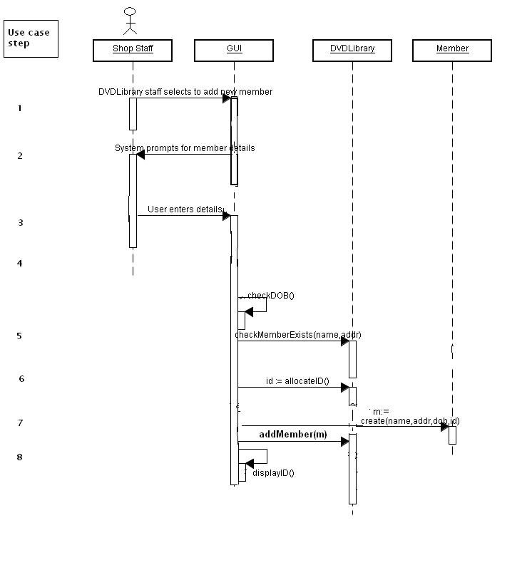
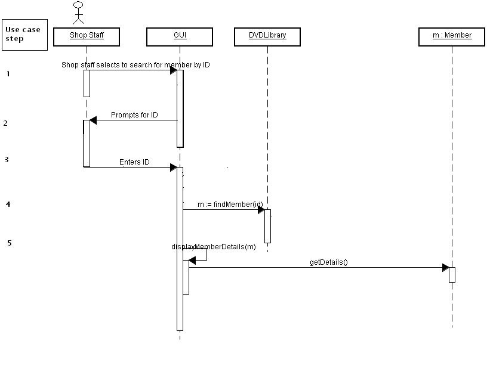
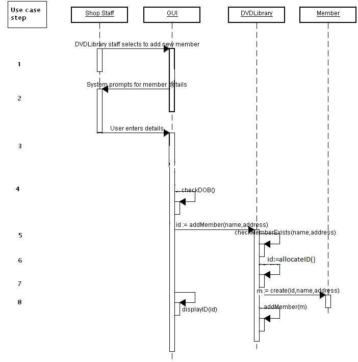
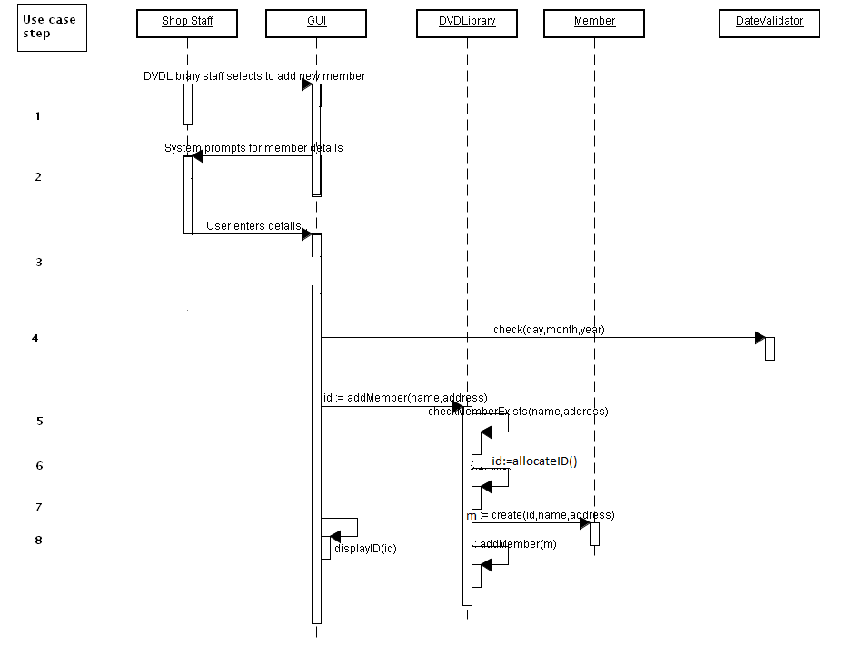
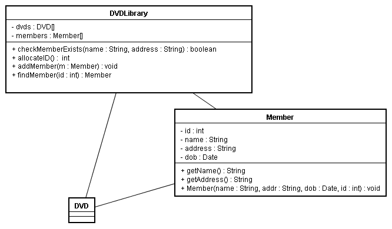

Sequence diagrams and Class diagrams
Page 1
Sequence diagrams
- Allow us to design the system in detail
- This is the step in the analysis and design where we work out interactions between classes in the system, in the form of methods
- They also help us work out the sequence in which methods are called - hence the name!
- Once we're done with sequence diagrams, we can fill in our class diagrams in full and begin coding
- Thus it is important to get them right!
Page 2
How to do a sequence diagram
- The use case text and robustness diagram are both used
- When we did the robustness diagram, we worked out what classes from the domain model are required for each step in the use case
- Each interaction between a use case step (or controller object in the robustness diagram) and a domain model object roughly translates to a method call
- Because we worked out the classes needed for each step of the use case in the robustness diagram, the robustness diagram makes the process much easier
- Typically, a controller on the robustness diagram translates to one (or maybe more) method(s) on the sequence diagram
- This should be done for alternative courses as well as the normal course of events - though often, it may be trivial for alternative courses of action
Page 3
Notation
- Sequence diagrams show the interaction between classes in the system
- We say that one class (class A) sends another class (class B) a message
- In code, this translates to class A calling a method of class B
- The arrow on the line connecting the two classes shows the direction of the message
- Sometimes one class sends itself a message (e.g see checkDetailsEntered() in the first example, below)
Page 4
Example 1 - Add Member

- The first two things that need to be done are to check that details
were entered in the GUI and to check that the date of birth was valid
- The GUI does not need to communicate with any other classes to do this, so we have a "circular" arrow to show that the GUI class is sending a message to itself
- Each check can be done by a GUI method, checkDetailsEntered() and checkDOB()
- The GUI then needs to check if the member exists already; it sends a
message to the DVDLibrary, passing it the name and address
(the checkMemberExists method)
- We worked out in the robustness diagram that DVDLibrary should be responsible for checking if a member exists, which makes it easier to draw up the sequence diagram
- The GUI then sends the DVDLibrary a message to allocate a new ID
- The DVDLibrary is the class that will know what the highest ID so far is, so therefore GUI needs to talk to DVDLibrary to do this
- The GUI then sends the Member class a message to create a new Member object with
the allocated ID and supplied details
- The GUI sends a create message to Member
- A create message is a special type of message which creates a new instance of a specified class
- Translates to a constructor in code
- Finally the GUI sends the DVDLibrary a message to add the new Member
Page 5
Design-level use case text: Add Member (for reference)
| Step | Actor action | System response |
|---|---|---|
| 1 | The use case begins when the DVD shop staff selects to add a new member. | - |
| 2 | - | The system prompts the user for the member details (name, address, date of birth) |
| 3 | The user enters the details specified in step 2. | - |
| 4 | - | Validity of details checked, e.g. date of birth is sensible |
| 5 | - | The DVDLibrary object checks that the member does not exist already (same name, same address) |
| 6 | - | DVDLibrary allocates membership ID for new member |
| 7 | - | A new Member object is created using the ID, name, address and date of birth, and added to the DVDLibrary. |
| 8 | - | Membership ID displayed by system for DVD shop staff to see. |
Page 6
Example 2 - View Member by ID

- First the GUI communicates with the DVDLibrary to retrieve a member
with a given ID
- The GUI needs to send a message to DVDLibrary, because DVDLibrary is responsible for retrieving a member by ID (we would work this out on the robustness diagram)
- Once we've retrieved the member, m, we then need to retrieve its details
to display on the GUI
- This is shown on the sequence diagram by the GUI sending a getDetails() message to a specific Member, m
- Note how m:Member is separate to plain Member in the sequence diagram, this is to show we are communicating with a specific Member,identified by the variable m in the previous step
Page 7
View Member Design Level Use Case Text (for reference)
| Step | Actor action | System response |
|---|---|---|
| 1 | The use case begins when the DVD shop staff selects to search for a member. | - |
| 2 | - | System prompts the user for the member ID |
| 3 | The user enters the details specified in step 2. | - |
| 4 | - | The DVDLibrary retreves the Member with that ID. |
| 5 | - | Attributes of Member loaded into GUI |
Page 8
Further improvement of sequence diagrams
- Sometimes, the initial design on the sequence diagram can be improved
- For instance, in the Add Member use case, the GUI is communicating with the DVDLibrary three times: firstly to check if a member exists, secondly to allocate an ID, and thirdly to create a new member
- It would be better if the whole process of adding a member could be packaged in the DVDLibrary class
- That way, the DVDLibrary could perform the whole process of adding a member without depending on other classes (i.e. the GUI)
- ...thus making the DVDLibrary more reusable in other applications
- This alternative design, in which a single addMember() method in DVDLibrary manages the whole process, is shown below
- So in summary, do not blindly adopt the first design you make in the sequence diagram! Look again at the sequence diagram and see if your design can be improved!

Page 9
Sequence diagram with DateValidator class
- Remember last week it was mentioned that when drawing up robustness diagrams, we can sometimes work out new classes to add to the domain model
- For example, we might decide to add a DateValidator class to be
responsible for validating the date
- Validating a date is a relatively tricky process, and any relatively tricky, involved processes typically have their own class to handle them
- The version of the sequence diagram below includes a DateValidator class: the GUI sends it a message when validating the date

Page 10
Class diagrams - revision
- The final stage before coding
- Class diagrams show the classes in the system, their inter-relationships, and the attributes and methods of each class
Page 11
How to derive the class diagram
- Classes and their interrelationships come from the domain model, which may have had classes added to it at the robustness diagram stage
- Attributes are typically added at the robustness stage, by analysing the robustness diagram and use case texts to figure out possible attributes for each class (largely common-sense!)
- Methods are identified when doing the sequence diagrams
- So having done robustness and sequence diagrams, you should have enough information to complete a class diagram
Page 12
Class diagram syntax
- + : public - accessible from anywhere
- - : private - accessible only from instances of the current class
- # : protected - accessible from instances of both the current class and subclasses
- Parameter and return types are also shown
Page 13
Class diagram example

- This class diagram is derived from the two sequence diagrams above, by adding the methods from the sequence diagram to the domain model classes
- In Member, - id: int means that id is a private attribute of the Member class, of type int
- In DVDLibrary, + checkMemberExists(name:String, addr:String):boolean means that checkMemberExists is a public method and takes two Strings (name and address) as parameters, and returns boolean (true/false) according to whether the member exists or not
- In DVDLibrary, + findMember(id: int): Member means that findMember is a public method and an int parameter, representing the member ID, and returns a Member
Page 14
Converting to code
- We can easily convert our class diagram to code, as the class diagram is a specification of the attributes and methods of each class
- We can also use the sequence diagrams to help us write code
- Sequence diagrams show the sequence in which code is called, so they help us write our methods in the correct order
- The order of method calls in the sequence diagram is the order that they get called in code